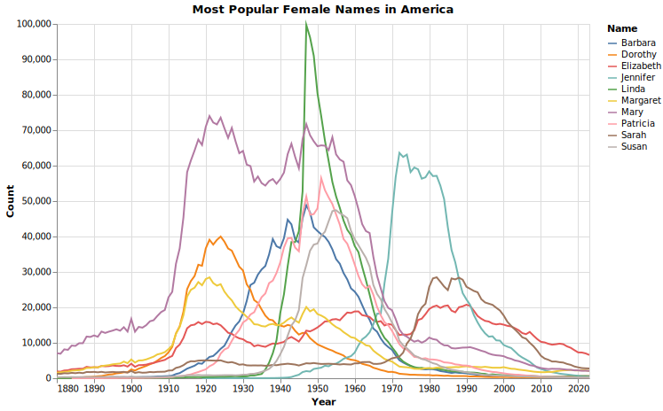
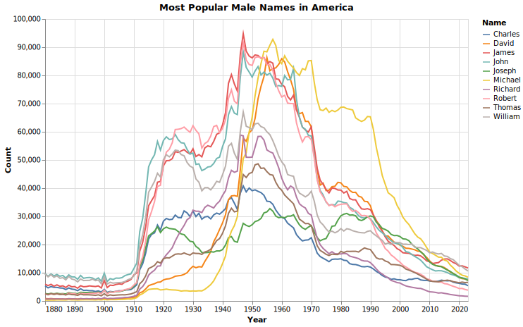
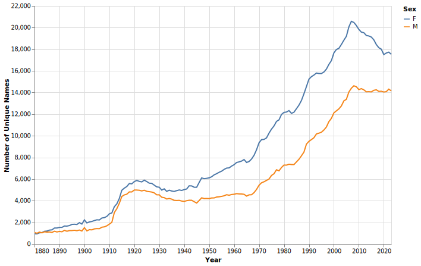

The Waning Popularity of Popular American Names
The era of Johns, Marys, and Elizabeths is coming to an end.
As society becomes more individualistic, “Classic” American names are going out of style. We see this prominently in celebrity culture, where parents crave creativity and unconventionality when it comes to naming their offspring—Kim Kardashian and Kanye West’s daughter North a nd Beyonce and Jay-Z’s daugher Blue Ivy are the most famous examples, while Elon and Grimes’ three children, X Æ A-Xii, Exa Dark Sideræl, and Techno Mechanicus, are the wildest examples.
This trend is not only limited to celebrities. According to data from the Social Security Administration, the names that have been the most popoular throughout history—John and Michael for males, Mary and Elizabeth for females—are waning in popularity in recent decades.


When we take a look at all the names available in the database and track the trends of the most popular names over time, we can see that the number of babies named a common name—either Barbara, Dorothy, Elizabeth, Jennifer, Linda, Margaret, Mary, Patricia, Sarah, or Susan for females and Charles, David, James, John, Joseph, Michael, Richard, Robert, Thomas, or William for males—dips sharply after 2010. Another interesting observation: female names seem to go through trend cycles whereas male names stay consistent over the years.

However, according to this chart that shows the number of unique names over time, the variety in baby names starts skyrocketing sometime around the late 1960s. Interestingly enough, we see a slight dip in the variety after 2010, which, seen in tandem with the popular names data, seems to suggest parents are opting for a new set of “common” names that were different from those that we are familiar with today.